🕓2024年7月25日
视频教程：▶https://youtu.be/JXj8NHjdmzc
前言
前面，我们通过 zizifn 大佬的一个开源项目 edgetunnel ，使得我们可以免费的在 Cloudflare 上面通过部署 Worker ，来创建一个免费 VLESS 节点！ 本文是 CM 基于 zizifn 的项目进行了二次创作，其实和 Worker 的部署大同小异，道理是一样的，只是多了很多功能，比如 自动生成 SUB CLASH，SURGE订阅地址、自动优选 IP 等。
GitHub 地址：点击访问>>
节点测速：
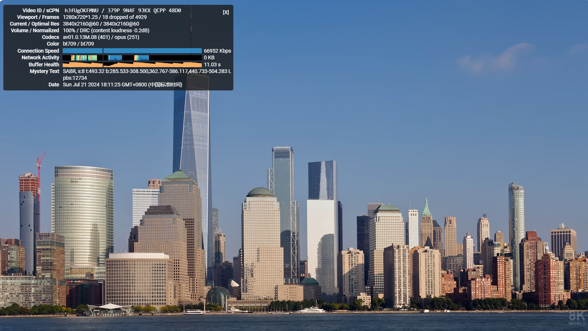
准备工作：
1、注册 Cloudflare 账号：点击注册
2、域名一个（虽说可以不使用域名，但是推荐大家还是购买自己的域名，毕竟不贵，一年才 10 元 RMB） 推荐在 Namesilo 进行购买，因为他的 WHOIS 隐私 是免费的，可以适当的进行一下隐私保护，而且域名还都挺便宜的。
Namesilo 域名地址：点击访问 （新用户1美元优惠券：kejixiaolu）
美国地址生成器：点击生成
3、托管域名到 Cloudflare
CloudFlare 部署免费节点
下载源文件
下载作者的 Worker 文件：点击下载 worker.zip
Pages 部署 VLESS
来到 Cloudflare 首页，点击 Workers 和 Pages ，点击 Pages ，点击 使用直接上传创建 – 上传资产。
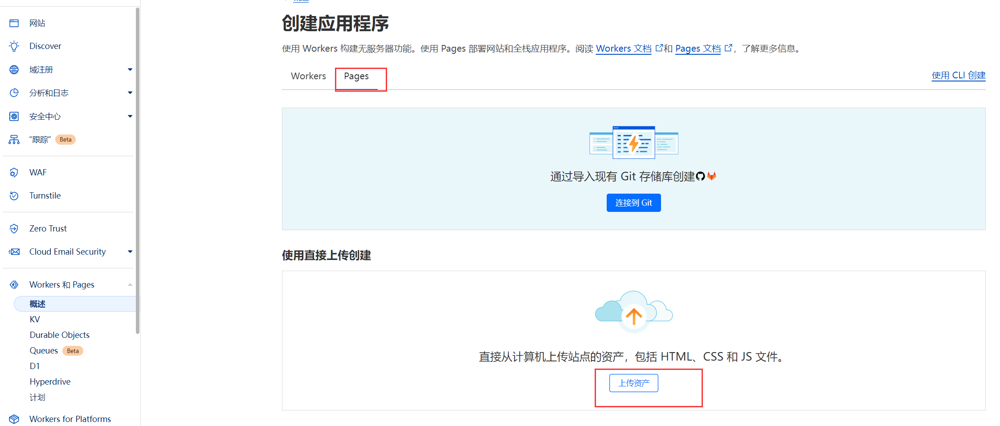
为我们的项目创建一个名字，点击创建项目。
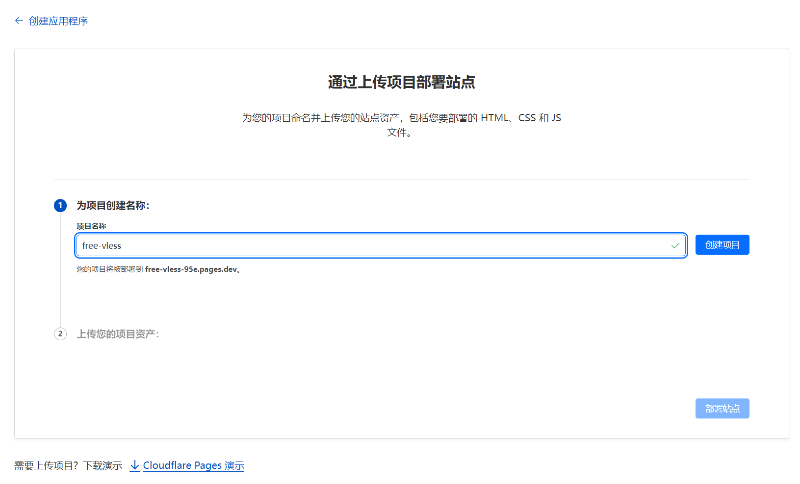上传刚才下载下来的 worker.zip （从计算机中选择 – 上传压缩文件），然后点击 部署站点，继续处理项目！
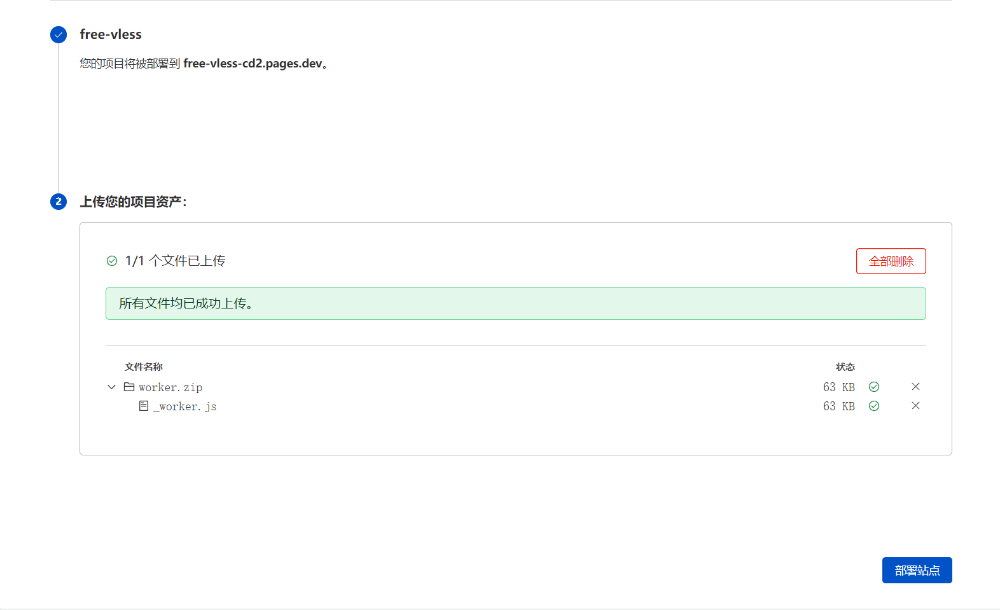
设置 UUID
点击 UUID 在线生成：点击进入>>，生成一个 UUID ，或是在 V2rayN 中生成一个！
回到刚才的项目，找到设置 – 环境变量 – 添加变量，变量名称：UUID ，变量值为刚才生成的 UUID ，点击保存！
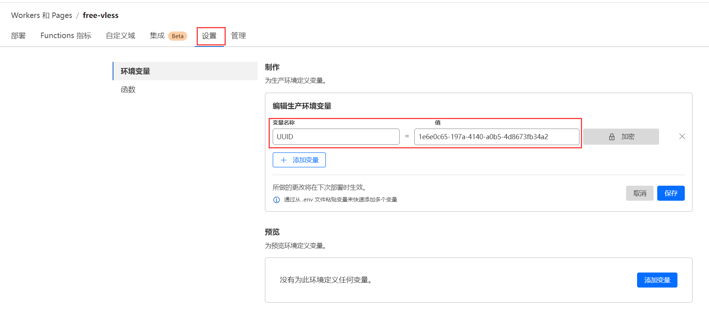
重新部署 Pages
回到项目，找到 部署，点击下面的 创建新部署，再次上传刚才的 worker.zip 文件，保存并部署！
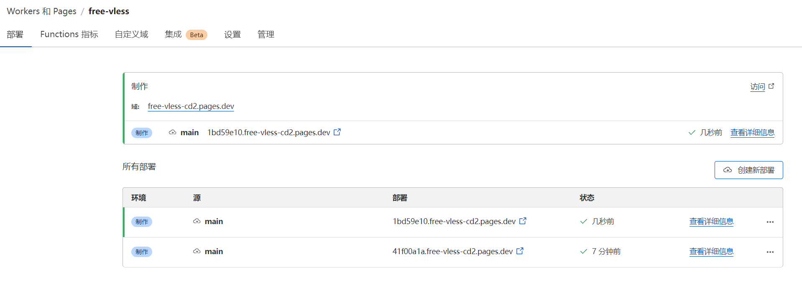
这样，我们点击上图中的 访问站点，若是有内容出现，证明部署成功
我们可以访问 https://域/UUID ，来查看我们的节点。
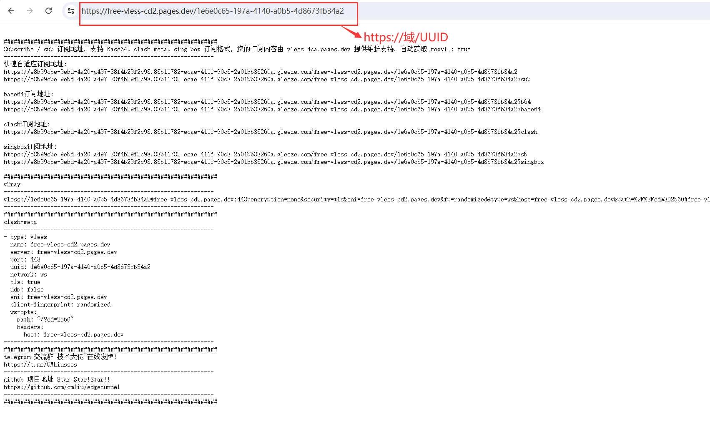
到这里，节点已经可以正常访问了，我们若是有域名，也可以加入一个自定义域，让其更牛批！
设置自定义域
添加自定义域，设置一个合适的二级域名，名字随意。若是已将域名托管到 Cloudflare ，直接按照下面操作即可！若是用其他免费的域名，或者域名没有托管到 CF，需要自行解析域名！
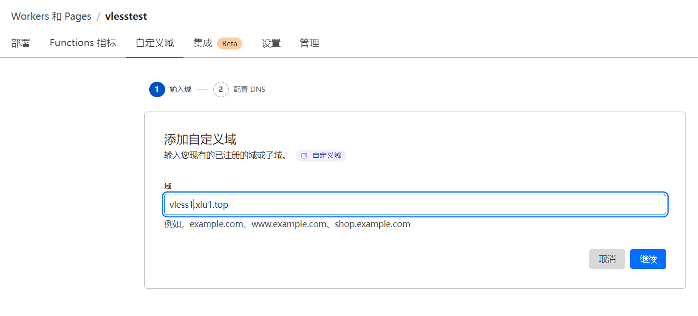
点击继续，然后，直接点击 激活域！一般情况下，几十秒就激活完成了！（后续或是需要删掉该项目，请先删除这个 自定义域）
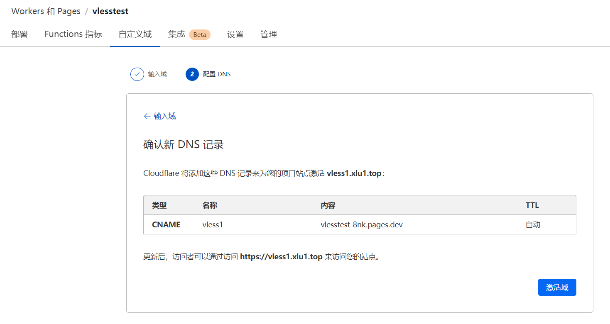
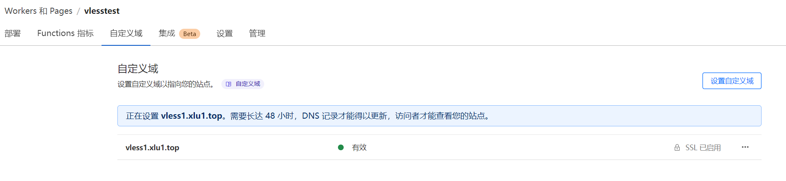
现在尝试访问刚才设置的自定义域，也就是 https://二级域名/UUID。
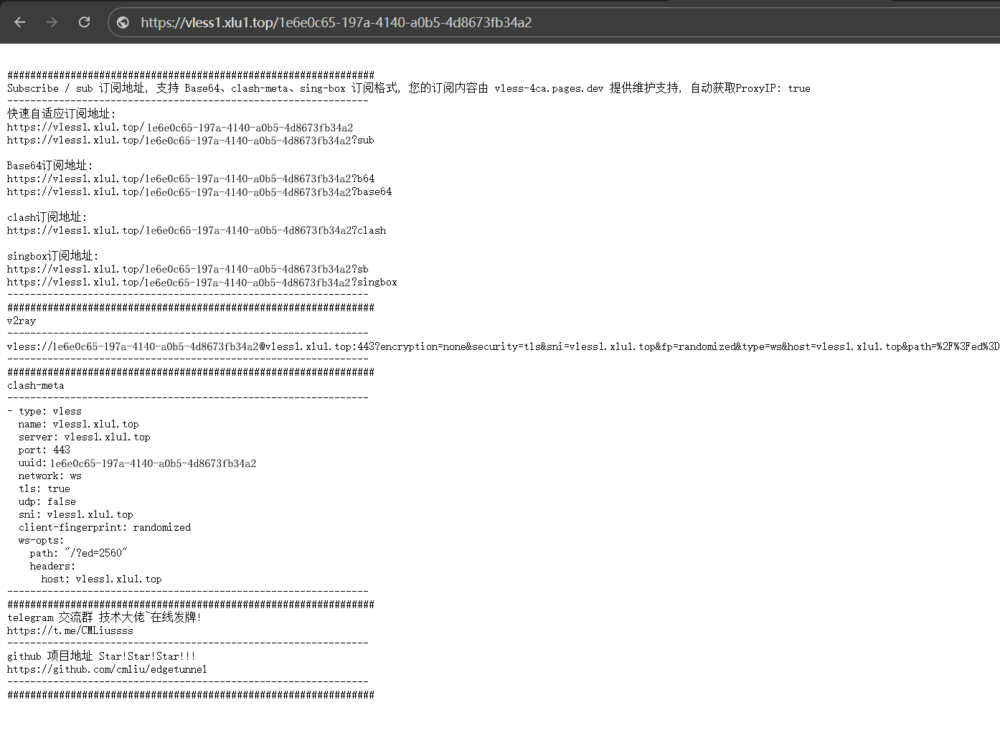
至此，节点部署完毕，我们导入上图中的 快速自适应订阅地址到相对于的 客户端软件，进行节点的订阅
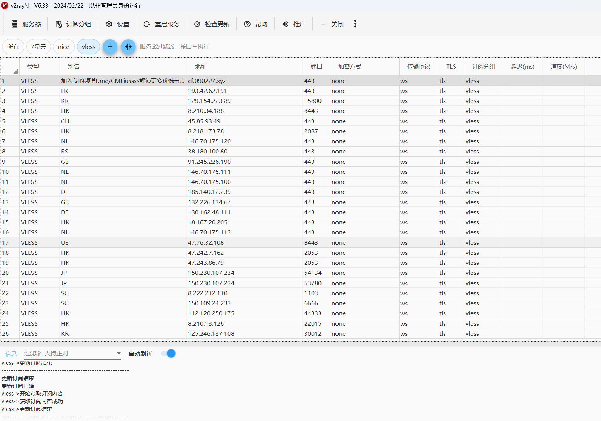
订阅完成，可以看到，多了很多节点，其实都是一个节点，只是用了不同的 IP。跟我们部署Worker 免费节点是一样的，只是自动进行了 IP 的优选！
解锁流媒体奈飞、ChatGPT等
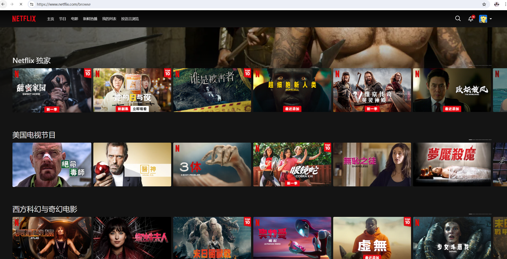